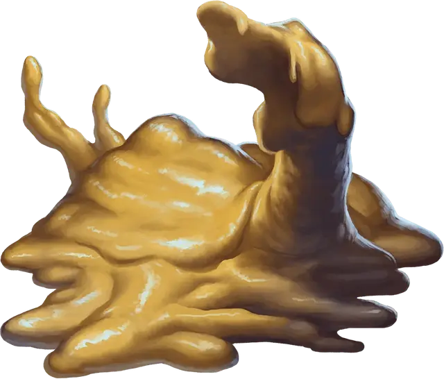

Золотистый студень
Ochre Jelly
Большая Слизь, без мировоззрения

Класс Доспеха 8
Хиты 45 (6к10 + 12)
Скорость 10 футов, лазая 10 футов
| мод | спас | ||
|---|---|---|---|
| СИЛ | 15 | +2 | +2 |
| ЛОВ | 6 | −2 | −2 |
| ТЕЛ | 14 | +2 | +2 |
| мод | спас | ||
|---|---|---|---|
| ИНТ | 2 | −4 | −4 |
| МДР | 6 | −2 | −2 |
| ХАР | 1 | −5 | −5 |
Сопротивление урону кислота
Иммунитет к урону электричество; рубящий
Иммунитет к состояниям сбивание с ног, очарование, ослепление, истощение, испуг, глухота
Чувства слепое зрение 60 футов (слеп за пределами этого радиуса), пассивное Восприятие 8
Опасность 2 (450 опыта)
Бонус мастерства +2
Среда обитания Подземье
Особенности
Аморфный. Студень может, не протискиваясь, перемещаться через узкое пространство шириной вплоть до 1 дюйма.
Паучье лазание. Студень может лазать по сложным поверхностям, в том числе по потолкам, без каких-либо проверок характеристик.
Действия
Ложноножка. Рукопашная атака оружием: +4 к попаданию, досягаемость 5 футов, одна цель. Попадание: Дробящий урон 9 (2к6 + 2) плюс урон кислотой 3 (1к6).
Реакции
Разделение. Когда студень Среднего или большего размера получает урон электричеством или рубящий урон, он делится на два новых студня, если у него есть, по крайней мере, 10 хитов. Каждый новый студень получает количество хитов, равное половине первоначального (округляя в меньшую сторону). Новые студни на один размер меньше первоначального.
Описание
Золотистый студень — это желтоватое пятно слизи, проникающее под дверями и через щели в поисках существ для поглощения. Он обладает достаточным звериным разумом и избегает больших скоплений врагов.
Золотистый студень преследует свою жертву на безопасном расстоянии. Его пищеварительные ферменты быстро растворяют плоть, но не воздействуют на такие материалы как кость, древесина и металл.
См. дополнительно статью: "Бестиарий: Слизь"